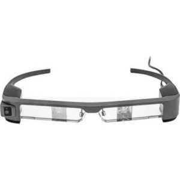
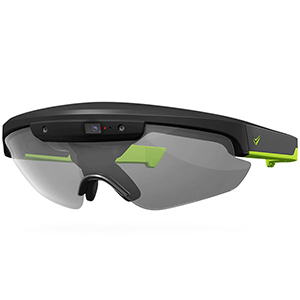
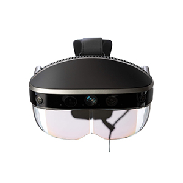
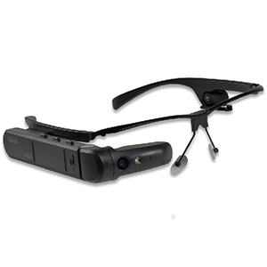

Augmented reality is primarily experienced via a wearable glass device, head-mounted device, or through smartphone applications. Augmented reality overlays digital content on top of the real world. Therefore, AR enhances the user’s experience in the real world rather than replacing it.
Not to be confused with virtual reality or mixed reality, even though they all fall under the extended reality spectrum, augmented reality is believed to have the biggest potential for mass consumption.
| № | Tethered AR headset | FOV | Country | Release year | Price in USD |
|---|---|---|---|---|---|
| 1 | Everysight Raptor | - | Israel | 2018 | $649 |
| 2 | Google Glass Enterprise Edition | - | US | 2017 | $1,800 |
| 3 | Toshiba dynaEdge AR100 Viewer | - | Japan | 2018 | $1,899 |
| 4 | Vuzix Blade Smart Glasses | - | US | 2018 | $1,000 |
| 5 | Kopin SOLOS | 10.68° | US | 2016 | $499 |
| 6 | Vuzix M300 | 20° | US | 2016 | $999 |
| 7 | Epson MOVERIO BT-300 | 23° | Japan | 2016 | $699 |
| 8 | ODG R-7 | 30° | US | 2017 | $2,750 |
| 9 | ThirdEye Gen X1 | 40° | US | 2017 | $1,299 |
| 10 | Meta 2 | 90° | US | 2017 | $1,495 |
|  |
Epson MOVERIO BT-300
|
The Epson MOVERIO BT-300, also known as the MOVERIO BT-300 FPV, are quality augmented reality smart glasses, with impressive specs and an affordable price point. Their HD display and high-resolution (5 MP) camera receive positive user feedback. Pros:
Cons:
Find out more: Epson MOVERIO BT-300 |
|  |
Everysight Raptor
|
AR smart glasses designs for cycling have become very popular, and the Everysight Raptor is a highly regarded AR device. In addition, these smartglasses offer a range of great features such as long battery life. Pros:
Cons:
Find out more: Everysight Raptor |
|  |
Meta 2
|
The Meta 2 is a tethered AR HMD and offers a fantastic FOV (90°) compared to other augmented reality products available. The Meta 2 also allows users to touch and engage with the holographic content. However, as it is tethered, the AR headset requires a 9-foot cable for power, video, and data. Pros:
Cons:
Find out more: Meta 2 |
|  |
Toshiba dynaEdge AR100 Viewer
|
Toshiba dynaEdge AR100 Viewer is an augmented reality head-mounted display aimed at professional users. These AR smart glasses require it to be tethered to the Toshiba dynaEdge DE-100, a battery-powered mini Windows 10 PC. Pros:
Cons:
Find out more: Meta 2 |
Steve worked as Head of Content at Aniwaa in 2018. After studying journalism at Rhodes University, South Africa, Steve went on to work for startups and large corporations in several countries, writing on a variety of topics including sports, emerging technologies and business, before joining Aniwaa.